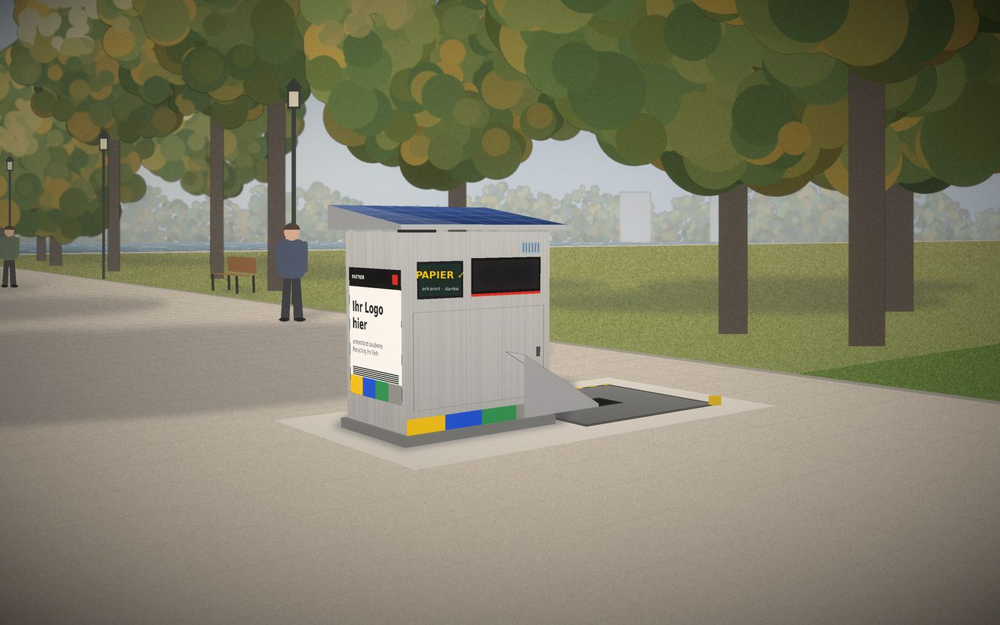
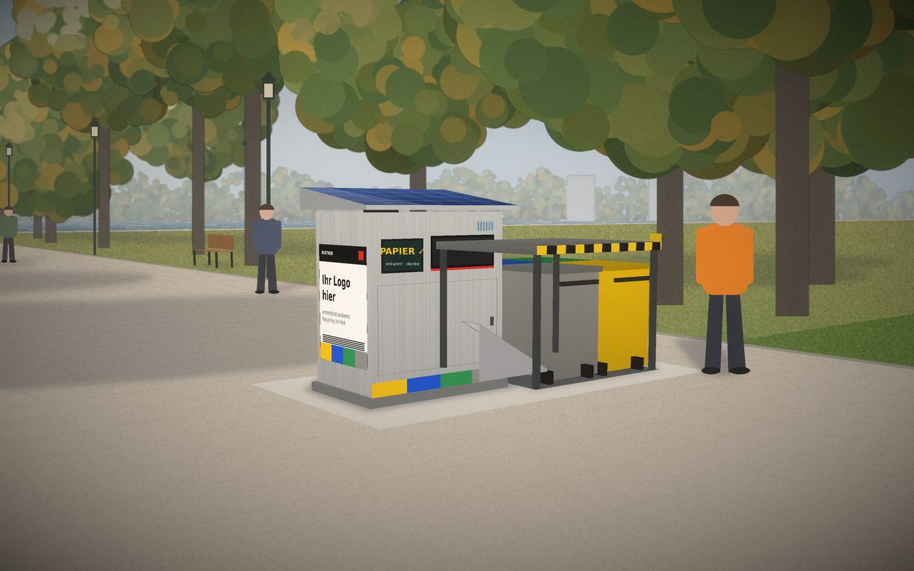
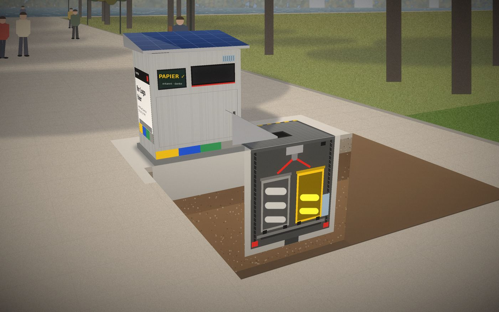

Sommer
Ein 300-W-Modul liefert in Bukarest an einem klaren Sommertag grob 1,3–1,5 kWh. Mehr als genug.
Sortiert.Gepresst.Versenkt.
Zwei Produkte auf einer Technik. SMT Urban steht im öffentlichen Raum, daneben eine versenkte Hubsäule mit vier Standardtonnen. SMT Indoor steht in Gebäuden. Beide erkennen jeden Einwurf per Kamera, sortieren ihn in vier Farben, pressen, versiegeln und melden, wann geleert werden muss. Geleert wird mit den Müllfahrzeugen, die Bukarest schon hat.
Paula Bratu · Andreea Olaru · Sarah Riesz · Rareș Popa · Denisa Schiopăta · Malina Pop · Alexia Beșe · Alesia



Vereinfachte 3D-Visualisierung mit den Maßen aus diesem Dokument, kein Foto.
Konzept und Value Proposition stehen. Prototyp, Lieferanten und Pilotstandort fehlen noch. Dieses Dokument legt fest, was gebaut wird.
Das Urban-Modell versorgt sich selbst: Solardach, Akku, Laderegler. Entscheidend ist nicht die Panelgröße, sondern dass das Gerät fast immer schläft und nur bei einem Einwurf aufwacht.
| Baustein | Auslegung | Warum |
|---|---|---|
| Solarmodul | Monokristallin, ca. 300 W, auf dem Dach mit Überstand ca. 1,6 m², 15–20° nach Süden geneigt | Mehr Fläche gibt das Dach nicht her; die Neigung lässt Laub und Regen abrutschen |
| Akku | LiFePO4, ca. 2,5 kWh, im Gerät gedämmt und belüftet | Sicher, langlebig, verträgt Kälte besser als andere Lithium-Akkus |
| Laderegler | MPPT | Holt bei bewölktem Himmel und Teilschatten mehr Energie heraus |
| Reserve | Nachladen nachts über das Netz der Parkbeleuchtung | Billiger als ein doppelt so großes Panel; sichert den Winter unter Bäumen ab |
| Verbraucher | Annahme | Wh/Tag |
|---|---|---|
| Ruhemodus: Steuerung, Mobilfunk, Sensoren | 3 W × 24 h | 72 |
| E-Ink-Display | ca. 1 W im Mittel | 24 |
| Erkennung: Kamera + KI | 15 W × 4 s × 500 | 8 |
| Klappe, Kippboden, Drehtrichter | 40 W × 2 s × 500 | 11 |
| Pressen | 250 W × 40 s × 30 Hübe | 83 |
| Siegelbalken, Weiche | ca. 8 Säcke | 5 |
| LED-Licht am Einwurf (nur bei Bewegung) | 5 W × 4 h | 20 |
| Hubsäule, einmal heben und senken | ca. 500 W × 60 s | 10 |
| Summe | ≈ 235 |
Ein 300-W-Modul liefert in Bukarest an einem klaren Sommertag grob 1,3–1,5 kWh. Mehr als genug.
Im Dezember eher 0,2–0,3 kWh, im Schatten von Bäumen weniger. Das reicht an vollen Tagen nicht ganz. Der Akku überbrückt etwa eine Woche, danach lädt die Parkbeleuchtung nach.
Das Gerät steht so, dass das Dach mittags Sonne hat. Die Erträge für den genauen Standort prüfen wir mit dem EU-Tool PVGIS.
Reicht allein für etwa eine Woche voller Tage ohne Sonne.
Ein kurzes Kabel zum nächsten Laternenmast lädt den Akku nachts, wenn die Leitung ohnehin Strom führt. Die günstigste Lösung für den Winter unter Bäumen.
Wird der Akku trotzdem knapp, presst das Gerät nur noch kurz vor „voll“ und dimmt das Display. Im schlimmsten Fall geht alles ungepresst in Grau. Die Tonne bleibt immer benutzbar.
Alle Werte sind Schätzungen für den Entwurf und werden am Prototyp gemessen.
| Extra | Was es bringt | Kosten |
|---|---|---|
| E-Ink-Display | Braucht fast keinen Strom, ist in der Sonne lesbar, zeigt Rückmeldung und Hinweise | gering |
| Nachladen über Parkbeleuchtung | Sichert den Winter, statt Panel und Akku zu verdoppeln | gering |
| Luftqualitäts- und Temperatursensor | Jeder Standort wird zur Messstation für Feinstaub und Hitze im Park. Daten für die Primărie über dieselbe Verbindung | gering |
| Regenwasser vom Dach | Dachrinne in ein Pflanzbeet an der Rückseite. Das Beet bewässert sich selbst, kühlt und lässt den Standort grün wirken | gering |
| QR-Code mit Live-Zähler | „Hier diesen Monat getrennt: 1,2 t“. Macht den Effekt sichtbar, ohne App | gering |
| Werbe- und Partnerfläche | Beide Seitenflächen des Geräts, je ca. 0,8 × 1,0 m, bedruckt und UV-beständig. Für lokale Cafés und Geschäfte, CSR-Partner großer Firmen oder Kampagnen der Primărie. Austausch z. B. pro Quartal. Kein Bildschirm, kein Strom | Einnahme |
| Second-Life-Akkus | Aufbereitete Module aus E-Autos statt neuer Zellen. Günstiger und kreislauffähig, braucht aber geprüfte Sicherheit | mittel |
Einwurf · Fraktionen · Innenleben · Ablauf
Simulation eines Einwurfs
Unsicher heißt Grau. Unter einem festgelegten Sicherheitswert geht der Gegenstand in den Restmüll.
Gewählt nach dem, was Menschen im Park und auf der Straße wirklich wegwerfen: Flaschen und Dosen, Kaffeebecher, Snackverpackungen, Pizzakartons, Bierflaschen aus Glas, Essensreste. Kunststoff und Metall teilen sich in Rumänien Gelb. Bioabfall von der Straße ist meist verschmutzt und gering in der Menge, er geht in Grau. Dafür bekommt Glas ein eigenes Fach, weil es im Park häufig ist und den besten Recyclingwert hat.
Ein Trichter mit Gitter oben am Gerät: „Becher hier leeren“. Die Flüssigkeit läuft in einen kleinen Tank in der Hubsäule und wird mit den Tonnen geleert. So bleiben Papier und Rest trocken.
Aschenbecher mit Löschsand oben am Dach. Keine Glut gelangt in die Mechanik.
Ein kleiner, abschließbarer Einwurf an der Seite. Wird selten geleert und an eine Sammelstelle für Altbatterien übergeben.
Ein Näherungssensor weckt das Gerät, sonst schläft es.
Das Display bittet zuerst um Getränkereste in den Trichter. Trockener Müll lässt sich besser sortieren und recyceln.
Die Klappe öffnet berührungslos. Ein Gegenstand, eine geschlossene Kammer.
Kamera, Gewicht und Metallsensor. Die KI läuft im Gerät, ohne Internet, in unter 2 Sekunden.
Unter einem festgelegten Sicherheitswert geht der Gegenstand in den Restmüll. Saubere Wertstoffe sind unser Qualitätsversprechen.
Der Drehtrichter lenkt ins Fach. Gelb, Blau und Grau werden gepresst, Glas fällt gedämpft und bleibt ganz.
Ist ein Fach voll, verschweißt der Siegelbalken den Sack. Die Weiche unter der Klappe stellt sich auf die Rutsche zur Tonne mit der richtigen Farbe.
Der Schieber wirft den Sack über die Rutsche in die Tonne seiner Farbe. Fraktionen werden nie gemischt.
Das Facility-Team bekommt eine Nachricht, öffnet die Fronttür und rollt die Tonnen zum Müllraum.
Ist eine Tonne zu etwa 80 % voll, geht eine Meldung an den Entsorger, mit Standort und Prognose für die Route.
SMT Urban · Weg eines Sacks · Sicher und sauber
Zwei Teile nebeneinander: die Sortiertonne und direkt daneben eine versenkte Hubsäule unter einer flachen Bodenklappe. In der Säule stehen vier Standard-Mülltonnen à 240 l fest im Quadrat 2 × 2. Der volle, versiegelte Sack rutscht in einen Trichter in der Mitte der Klappe. Darunter verteilt eine Weiche mit zwei Klappen den Sack in eine von vier kurzen Rutschen, eine pro Tonne. Nichts Schweres bewegt sich. Gesamtfläche: rund 3,4 × 1,9 m.
Alles läuft automatisch und immer nur ein Sack auf einmal. Die Steuerung prüft jeden Schritt mit einem Sensor, bevor der nächste beginnt.
Weg eines Sacks
Über jedem Fach sitzt eine Rolle Schlauchfolie in der Farbe des Fachs. Daraus entsteht der Sack.
Der Drehtrichter wirft erkannte Gegenstände in den offenen Sack.
Die Presse drückt von oben, wenn der Füllstand eine Marke erreicht. Glas wird nicht gepresst.
Ist der Sack voll, verschweißt und trennt der Siegelbalken oben. Dieselbe Naht ist der Boden des nächsten Sacks. Niemand muss Säcke wechseln, nur ab und zu eine neue Rolle einsetzen.
Bevor sich etwas öffnet, stellt sich die Weiche unter der Klappe auf die Rutsche zur Tonne mit der passenden Farbe. In der Zeichnung stehen die Tonnen zur Vereinfachung in einer Reihe, in Wirklichkeit 2 × 2.
Der Boden des Fachs klappt auf, der versiegelte Sack fällt auf eine Rampe im Sockel des Geräts.
Die Rampe führt zur Seite. Die Seitenklappe öffnet nur für diesen Sack.
Der Sack rutscht über die kurze Außenrutsche in den Trichter in der Mitte der Bodenklappe.
Der Sack fällt durch den Trichter, die Weiche lenkt ihn in die Rutsche seiner Farbe, er landet in der offenen Tonne etwa 0,7 m tiefer. Die Lichtschranke meldet den Durchgang, alle Klappen schließen. Erst dann darf der nächste Sack folgen.
Die Rutsche vom Gerät endet in einem Trichter in der Mitte der Bodenklappe. Die vier Tonnen stehen fest darunter, 2 × 2 im Quadrat.
Unter dem Trichter sitzt eine Weiche mit zwei Klappen, wie bei einer Weiche für Züge. Sie lenkt den Sack in eine von vier kurzen, steilen Rutschen, je eine pro Tonne. Bewegt wird nur eine leichte Klappe, nie 400 kg Tonnen.
Jede Rutsche hat eine Lichtschranke. Sie meldet, dass der Sack in der richtigen Tonne angekommen ist.
Im Schacht sind die Tonnendeckel nach hinten eingehakt, damit die Säcke hineinfallen. Beim Herausrollen klappt der Mitarbeiter sie zu.
Füllstand · Meldung · Route · Entleerung
Simulation · Tonne Gelb
Meldung bei etwa 80 %. Der Sensor meldet jede Tonne einzeln, mit Standort und Prognose für die Route.
Kriterien: Sicherheit im öffentlichen Raum, einfache Bedienung, Nachhaltigkeit und vor allem Kompatibilität mit den Fahrzeugen, die Bukarest schon hat. Die fahren mit Schüttungen am Heck, die Standardtonnen greifen und kippen.
| Variante | Sicherheit | Fläche & Kosten | Nachhaltig | Kompatibel |
|---|---|---|---|---|
| A · Ein Schacht für alle Säcke | gut | klein | Presswagen zerdrückt Säcke, alles mischt sich | Sortierung nach Farbe nötig |
| B · Vier Unterflurcontainer, Kran | gut | ca. 25 m², vier große Gruben | keine Technik im Boden | braucht Kranfahrzeuge |
| C · Hubsäule unter der Tonne | gut | klein | Gerät steht auf der Mechanik | Standardtonnen |
| D · Hubsäule neben der Tonne unsere Wahl | Klappe bündig, Säule füllt die Öffnung beim Heben | ca. 6,5 m², eine kleine Grube | elektrische Spindel, kein Öl, Solarstrom | 240-l-Tonnen, jedes Müllfahrzeug |
Daneben statt darunter, weil die Sortiertonne dann fest auf eigenem Fundament steht und nie mitbewegt wird. Elektronik und Hubmechanik sind getrennt und unabhängig voneinander zu warten. Die ganze Klappenfläche steht für die Tonnen zur Verfügung, und der Entsorger arbeitet an der freien Seite, ohne um das Gerät herum zu müssen.
Die Klappe ist eine einzige, bündige, rutschfeste Stahlplatte, auf der man laufen kann. Beim Heben füllt die Säule die Öffnung komplett aus, es entsteht nie ein offenes Loch. Heben geht nur mit Schlüssel oder NFC-Karte des Entsorgers und nur, solange der Taster gedrückt wird. Gelbe Warnleuchte, Signalton, Klemmschutzleisten.
Energie: Vier volle Tonnen 1,2 m anzuheben braucht nur einige Wattstunden. Das schafft der Solarakku problemlos.
| Zugang zur Hubsäule | Lösung |
|---|---|
| Von außen | Keine Griffe, kein sichtbares Schloss. Die Stahlklappe wiegt über 100 kg und lässt sich nur mit dem Motor bewegen. |
| Selbsthemmung | Die Spindeln halten die Klappe von selbst fest. Aufhebeln oder Hochdrücken ist mechanisch nicht möglich. |
| Bedienfeld | Hinter einer kleinen Klappe an der Geräteseite zur Säule, verschlossen mit einem Spezialschlüssel des Entsorgers. |
| Freigabe | NFC-Mitarbeiterkarte antippen, alternativ die App per Bluetooth direkt am Gerät. Ohne gültige Karte passiert nichts. |
| Heben | Taster gedrückt halten, ca. 60 s bis oben. Loslassen stoppt sofort. |
| Protokoll | Jede Öffnung wird mit Karte, Zeit und Dauer gespeichert. |
| Manipulation | Erschütterungs- und Neigungssensor meldet Aufbruchversuche sofort an die Zentrale. |
| Stromausfall | Notkurbel für die Spindeln, nur mit Spezialschlüssel erreichbar. |
SMT Indoor · Vergleich · Komponenten · Pilot · Pitch · Kreislauf · Machbarkeit · Fahrplan
Gleiche Technik ohne Hubsäule und ohne Solar: Strom aus der Steckdose, vier 120-l-Tonnen hinter der Fronttür, die das Hauspersonal herausrollt. Gedacht für Malls, Büros, Wohnblocks, Universitäten.
| Merkmal | SMT Urban | SMT Indoor |
|---|---|---|
| Einsatzort | Parks, Fußgängerzonen, Plätze, Vorplätze | Malls, Büros, Wohnblocks, Universitäten |
| Kunde | Primărie, Sektorverwaltung, Entsorger | Facility Management, Mall-Betreiber, Asociații de proprietari |
| Energie | Solar + Akku, netzunabhängig | 230 V + Pufferakku |
| Lagerung | Vier 240-l-Tonnen in versenkter Hubsäule | Vier 120-l-Tonnen hinter der Fronttür |
| Entleerung | Säule hebt, Tonnen zum Müllfahrzeug | Hauspersonal rollt Tonnen zum Müllraum |
| Schutzart | IP65, vandalismussicher, frostfest | IP44 |
| Maße Gerät (H × B × T) | ca. 1,60 × 1,40 × 0,90 m | ca. 1,30 × 1,20 × 0,70 m |
| Gesamtfläche | ca. 3,4 × 1,9 m | ca. 1,2 × 0,7 m |
| Kapazität | 4 × 240 l gepresst, etwa 40–60 normale Parkeimer | 4 × 120 l |
Alle Maße und Leistungswerte sind Entwurfswerte und werden im Prototyp geprüft.
| Baugruppe | Lösung | Kreislauf |
|---|---|---|
| Gehäuse | Recycling-Aluminium, Anti-Graffiti-Beschichtung (Urban); recycelte HDPE-Paneele (Indoor) | Lokal in Bukarest gefertigt, verschraubt statt verklebt |
| Energie | Solar ca. 300 W, MPPT-Regler, LiFePO4 ca. 2,5 kWh, Nachladen über Parkbeleuchtung (Urban); 230 V (Indoor) | Netzunabhängig im Alltag, kein eigenes Stromkabel |
| Erkennung | Kamera, LED, Wägezelle, Metallsensor, Edge-KI | Updates aus der Ferne |
| Mechanik oben | Klappe, Kippboden, Drehtrichter, drei Pressen, Gummilamellen für Glas, Siegelbalken, Schieber | Modulare Einschübe |
| Hubsäule | Betonschacht innen ca. 1,8 × 1,7 × 2,0 m, zwei elektrische Spindeln, Vierwege-Weiche mit vier Rutschen, bündige Stahlklappe, Drainage + Pumpe | Kein Hydrauliköl, Teile einzeln tauschbar |
| Tonnen | 4 × 240 l nach EN 840, Farben Gelb, Blau, Grün, Grau | Recycling-HDPE, kompatibel mit jedem Müllfahrzeug |
| Extras | Trichter + Tank für Getränkereste, Aschenbecher mit Löschsand, Batterieeinwurf | Trockener Müll, bessere Recyclingqualität |
| Sensorik | Füllstand je Tonne, Temperatur, Wasserstand im Schacht, Näherung | Brand- und Hochwasserwarnung |
| Sicherheit | Totmann-Taster, NFC-Freigabe, Warnleuchte, Signalton, Klemmschutzleisten | Heben nur mit Personal vor Ort |
| Säcke | Rollen in vier Farben | Recyceltes LDPE |
| Display | E-Ink, beleuchtet nur bei Bewegung | Fast kein Stromverbrauch |
| Umweltsensor | Feinstaub (PM2.5/PM10), Temperatur, Luftfeuchte | Messdaten für die Stadt |
| Kommunikation | NB-IoT/LTE-M (Urban), WLAN oder LTE (Indoor) | Geringer Energiebedarf |
Wir starten nur in Bukarest, an einem Ort mit sehr hoher Besucherzahl und bekannten Müllproblemen.
Standardtonnen, geleert mit den Fahrzeugen, die Bukarest schon hat. Keine neuen Fahrzeuge, kein neues Personal.
Sortenreine Wertstoffe statt Mischmüll, Glas getrennt, Getränkereste getrennt. Weniger Deponie.
Ein Gerät statt mehrerer überfüllter Eimer. Der Müll verschwindet sichtbar unter die Erde, Vögel und Ratten kommen nicht ran.
Abholung nur bei Bedarf, deutlich seltener als bei normalen Parkeimern. Bezahlt als Abo mit Wartung (Product-as-a-Service).
| Schritt | Entscheidung im Produktdesign |
|---|---|
| Beschaffung | Recycelte Materialien, Lieferanten in und um Bukarest |
| Produktion | Eine Plattform, zwei Gehäuse, lokale Montage |
| Logistik | Abholung nach Füllstand mit vorhandenen Fahrzeugen, Routenplanung |
| Vertrieb & Marketing | Product-as-a-Service: Gerät bleibt unser Eigentum, Kunde zahlt Abo |
| Nutzung | Fernwartung, Updates, Austausch einzelner Module |
| Rücknahme & Recycling | Module werden aufbereitet, Gehäuse recycelt |
Jede Komponente gibt es bereits einzeln in der Industrie. Schwierig ist, alles zusammen draußen und über Jahre zuverlässig laufen zu lassen.
| Teil | Schwierigkeit | Warum |
|---|---|---|
| Solar, Akku, Füllstandssensoren, Mobilfunk, Dashboard | einfach | Standardteile, fertig zu kaufen |
| Weiche und Rutschen | einfach | Einfache Mechanik |
| Werbefläche, E-Ink, Umweltsensor | einfach | Fertige Bauteile |
| Pressen | mittel | Gibt es bereits in solarbetriebenen Presstonnen |
| Hubsäule mit Klappe | mittel | Ähnliche Hebesysteme für versenkte Mülltonnen sind auf dem Markt |
| KI-Erkennung | mittel bis schwer | Funktioniert im Labor. Auf der Straße sind Gegenstände schmutzig, nass, gemischt: Die echte Genauigkeit ist die große Frage |
| Sack automatisch formen und versiegeln | schwer | Größtes technisches Risiko: Schmutz und Feuchtigkeit an der Naht schwächen die Versiegelung |
| Vandalismus und Winter | schwer | Viel Feldtest, wenig Theorie |
Erkennung und Sortierung in einem Gebäude testen, Säcke werden noch von Hand gewechselt. Ziel: echte Erkennungsgenauigkeit messen, erster Umsatz mit Facility-Kunden. Etwa 6 Monate.
Ein Standort mit Hubsäule, Weiche, Solar und Werbefläche, noch ohne automatische Versiegelung. Ziel: Wetter, Vandalismus, Energiebilanz und Abholung mit dem Entsorger testen. Etwa 6–12 Monate.
Erst wenn alles andere zuverlässig läuft. Danach weitere Standorte in Bukarest, bezahlt als Abo mit Wartung und mitfinanziert durch Partnerflächen.